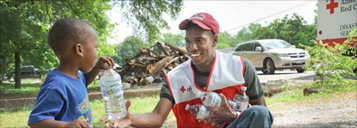

Disaster Cycle Services
One of the most visible aspects of the Red Cross services, Disaster Services play out in different ways. The Red Cross can open overnight shelters for people to have a safe place to sleep. We also distribute emergency supplies. These can include basic personal items such as a blanket or clothes, or something more specific such as tarps, masks and shovels. We also have mental health counselors available to help victims cope with these disasters.
In recent years, the Red Cross has worked to decrease the number of times that we response to disasters. The Home Fires Campaign installs smoke detectors in low income homes to try to save lives. Twice a year there is a National Sound the Alarm campaign to bring awareness to how such a simple thing can save a life.
Disaster Cycle Services

Shelters and Emergency Supplies
The Red Cross opens shelters to make sure people have a safe place to stay, a hot meal and access to other support from trained volunteers. Emergency supplies help people in the immediate aftermath of a disaster and in the days and weeks that follow. Our comfort kits contain basic personal supplies needed in the aftermath of a disaster, such as a toothbrush, deodorant and shampoo. Other emergency supplies could include tarps, rakes, shovels, and trash bags to help people clean up their homes and return to normalcy. Emergency supplies can be handed out at convenient distribution centers or from an emergency response vehicle in affected areas.
Health and Mental Health Assistance
Red Cross health and mental health volunteers travel to disaster sites to help people cope. Health workers can provide first aid treatment for injuries, monitor the well-being of people staying in Red Cross shelters, and replace prescription medications or eyeglasses. Other workers specialize in providing emotional support and helping people to cope after a disaster.
Meals and Snacks
After a disaster, the Red Cross works with community partners to provide hot meals, snacks and water served at shelters or from Red Cross emergency response vehicles in affected neighborhoods.